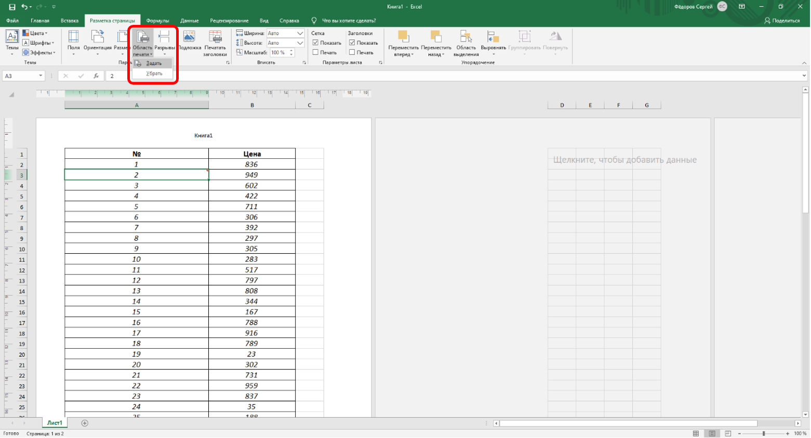
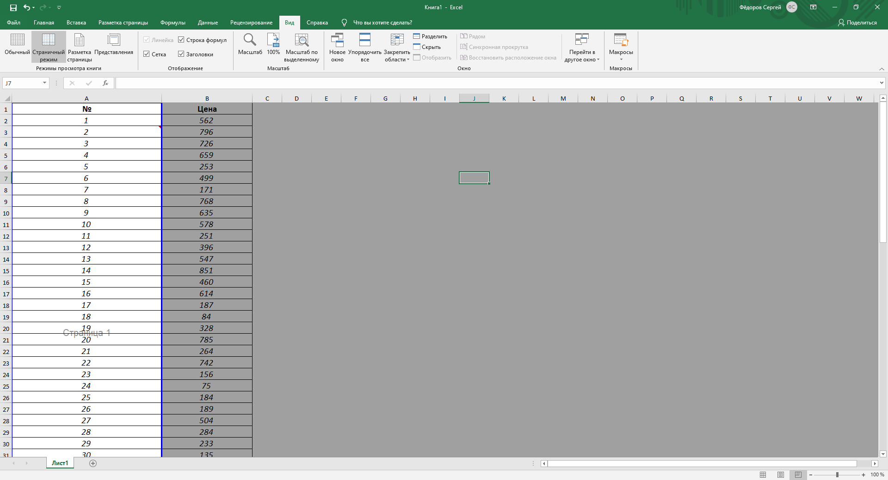
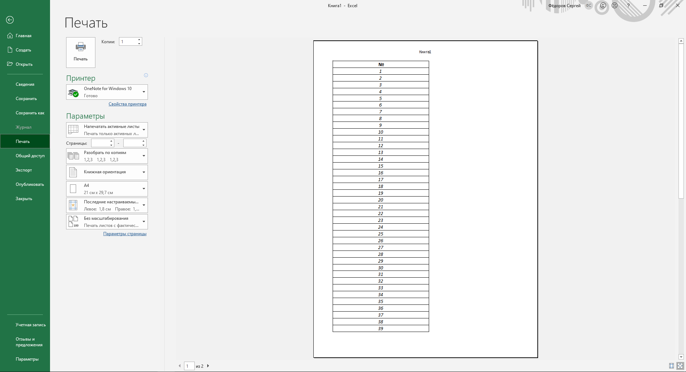
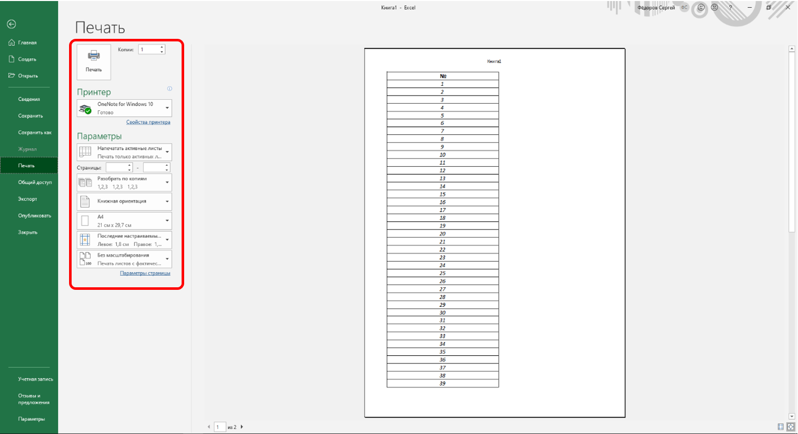

Настройка выборочной печати
Для постоянной печати из всей таблицы какого-либо диапазона следует определить его как область печати.

Рис. 15.15. Настройка выборочной печати
Область печати на листе в режиме просмотра Обычный и Разметка страницы отделяется от остальных частей листа тонкой пунктирной линией. В режиме просмотра Страничный область печати отображается на обычном фоне и выделена синей линией границы страницы, в то время как остальная область листа затенена (рис. 15.16). При необходимости размеры области печати можно изменить перетаскиванием границы страницы.

Рис. 15.16. Отображение области печати
При задании области печати для несмежных диапазонов каждый их них будет печататься на отдельной странице.
Для обеспечения печати всей таблицы или для возможности задания другой области печати следует в меню кнопки Область печати выбрать команду Убрать (см. рис. 15.15).
Предварительный просмотр листа
Для того чтобы убедиться, что документ полностью подготовлен к печати, можно использовать предварительный просмотр.
Режим предварительного просмотра представлен в подчиненном меню команды Печать (см. рис. 15.17).

Рис. 15.17. Отображение листа в режиме предварительного просмотра
Печать документа
Печать всего документа в одном экземпляре
Для печати всего документа в одном экземпляре достаточно в меню кнопки Файл (см. рис. 15.2) в пункте Печать выбрать команду Печать.
Настройка параметров печати
Настройка производится в окне Печать (рис. 15.18).

Рис. 15.18. Настройка параметров печати
В разделе Принтер в раскрывающемся списке можно, при наличии нескольких принтеров подключенных к компьютеру или локальной сети, выбрать принтер, на котором будет печататься документ.
В разделе Параметры можно из выпадающих меню выбрать область печати, разбор по копиям (количество копий указывается в соответствующем счётчике), а также можно в счетчиках указать диапазон печатаемых страниц.